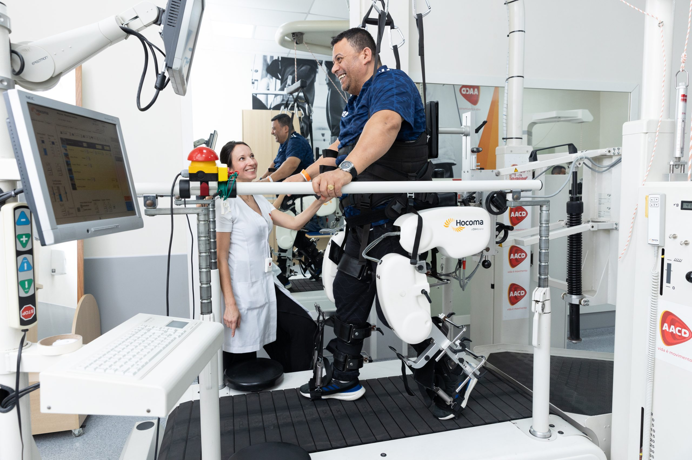

Tecnologia que transforma possibilidades em autonomia.
Conectamos as demandas da AACD a universidades, laboratórios e FabLabs preparados para produzir soluções que fazem a diferença.
Conheça o projeto
Conectar uma necessidade real a quem pode produzir a solução.
A plataforma aproxima a AACD de universidades, laboratórios e FabLabs. Cada demanda pode encontrar uma instituição com conhecimento técnico e equipamentos disponíveis para transformar uma ideia em tecnologia assistiva.
Há mais de sete décadas, vida é movimento.
A AACD nasceu de uma visão pioneira e se tornou referência em ortopedia e reabilitação.
Nasce a AACD
O Dr. Renato da Costa Bomfim funda a instituição durante o surto de poliomielite no Brasil.
Primeira Oficina Ortopédica
A AACD amplia sua atuação e se torna referência na produção de próteses e órteses.
Primeiro Teleton
A mobilização nacional fortalece a causa e ajuda a ampliar o atendimento da instituição.